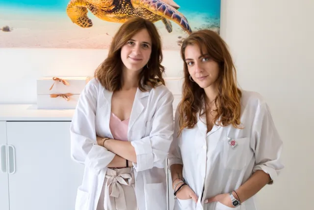
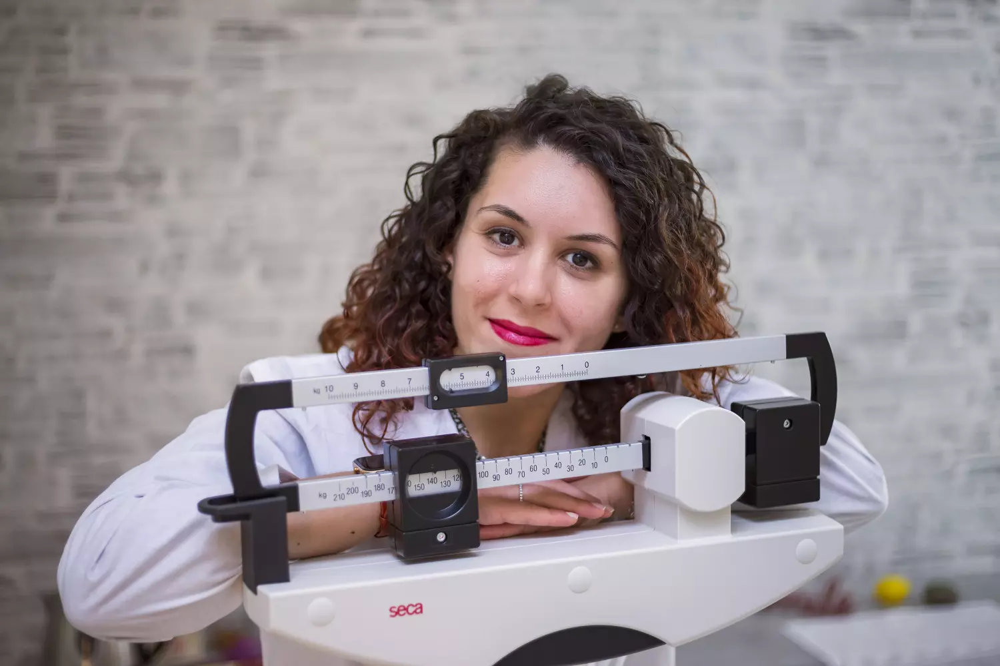

3 studi a Salerno, Angri e Nocera · Aperti fino alle 21 · Prima consulenza gratuita
Sì, voglio dimagrire per sempre! →Il metodo rivoluzionario che ti insegna a gestire la tua alimentazione in completa autonomia, per tutta la vita.
Il segreto?
Un approccio educativo che ti insegna a gestire 8 aree chiave del tuo stile alimentare, trasformandoti nella migliore esperta della tua nutrizione.
Non una dieta, ma una rivoluzione nel tuo rapporto con il cibo.
Il dimagrimento lento è l'innovativa filosofia di dimagrimento utilizzata dal nostro studio. Lavora sulla trasformazione delle vere cause dell'eccesso di peso per dare un dimagrimento che duri per sempre.
L'abbiamo denominata "Dimagrimento Lento" per contrapporci ai metodi che promettono risultati veloci come "perdi 10 chili in un mese": risultati che tanto velocemente arrivano, quanto velocemente vanno via.
I chili di troppo sono solo un sintomo. Non sono la vera causa dell'eccesso di peso. Le 82 abitudini che causano l'eccesso di peso nel lungo periodo — su ognuna lavoriamo con una strategia specifica.
Esempi delle vere cause:
Lo scopo del dimagrimento lento: farti raggiungere e mantenere per sempre il tuo peso ideale.

Biologhe nutrizioniste iscritte all'Ordine dei Biologi, specializzate nel metodo Dimagrimento Lento.
Biologa Nutrizionista
Biologa Nutrizionista
Biologa Nutrizionista
Biologa Nutrizionista
Biologa Nutrizionista
Biologa Nutrizionista
Responsabile Amministrativa

Siamo stanchi dei risultati effimeri tanto pubblicizzati sui social, come "10 chili in un mese", che portano solo all'effetto yo-yo. La nostra visione è diversa.
Il nostro obiettivo è insegnare a ogni paziente come gestire la propria alimentazione in completa autonomia, per tutta la vita. Vogliamo che le persone diventino esperte della propria nutrizione.
Con il nostro metodo, forniamo gli strumenti per prendere decisioni alimentari consapevoli, gestire la fame nervosa, e godersi il cibo senza sensi di colpa.
Prenota la consulenza gratuita →Storie di dimagrimento reale, raccontate dalle nostre pazienti.
"Ho sconfitto gli attacchi di fame che mi facevano riprendere tutto il peso perso"
"Ho scoperto che non era fame vera, ma ansia: ora so come gestirla senza il cibo"
"A 31 anni ho scoperto che i carboidrati non fanno ingrassare: la mia rivoluzione dopo 14 anni"
Prenota ora la tua consulenza conoscitiva gratuita.
Durante la sessione di 1 ora one-to-one con una delle nostre biologhe nutrizioniste:
Inizia oggi il tuo percorso verso un dimagrimento che dura per sempre!
Come paziente, hai accesso esclusivo all'app che ti supporta ogni giorno nel percorso.
Tre studi per servirti meglio — tutti aperti fino alle 21 dal lunedì al venerdì.
Via Irno 2, 84135 Salerno (SA)
Corso Vittorio Emanuele 13, 84012 Angri (SA)
Via Attilio Barbarulo 105, 84014 Nocera (SA)